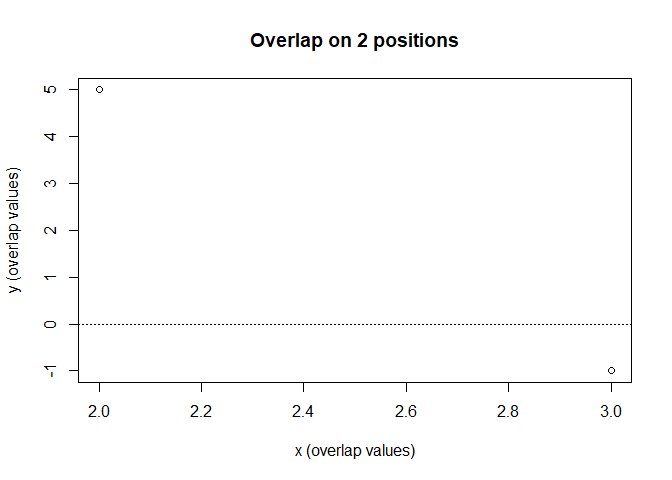

##sparseNumeric
sparseNumeric provides an S4 class, sparse_numeric, for representing numeric vectors in sparse form. Only nonzero entries are stored, along with their positions and the full vector length. The package includes methods for common vector operations without converting to a dense vector, including:
addition, subtraction, and elementwise multiplication
dot products via sparse_crossprod()
mean() including implicit zeros
norm() (Euclidean norm)
standardize() using mean and sample standard deviation including zeros
This package was built for coursework and lightweight sparse computations.
##Installation
You can install the development version from GitHub:
devtools::install_github(“
Then load it:
library(sparseNumeric)
#>
#> Attaching package: 'sparseNumeric'
#> The following object is masked from 'package:base':
#>
#> normExample usage
Create a sparse vector by coercing from numeric:
Writing
x <- as(c(0, 0, 5, 0, -2), "sparse_numeric")
x
#> sparse_numeric (length=5, nnz=2)
#> entries: [3]=5, [5]=-2Coerce back to dense when you want to view values:
Writing
as(x, "numeric")
#> [1] 0 0 5 0 -2Basic arithmetic
Writing
y <- as(c(1, 1, 0, 0, 4), "sparse_numeric")
sparse_add(x, y)
#> sparse_numeric (length=5, nnz=4)
#> entries: [1]=1, [2]=1, [3]=5, [5]=2
sparse_sub(x, y)
#> sparse_numeric (length=5, nnz=4)
#> entries: [1]=-1, [2]=-1, [3]=5, [5]=-6
sparse_mult(x, y)
#> sparse_numeric (length=5, nnz=1)
#> entries: [5]=-8Operators +, -, and * work too:
Writing
x + y
#> sparse_numeric (length=5, nnz=4)
#> entries: [1]=1, [2]=1, [3]=5, [5]=2
x - y
#> sparse_numeric (length=5, nnz=4)
#> entries: [1]=-1, [2]=-1, [3]=5, [5]=-6
x * y
#> sparse_numeric (length=5, nnz=1)
#> entries: [5]=-8Standardization
standardize() returns a sparse vector where each element is (xi−xˉ)/sx using the mean and sample standard deviation including implicit zeros.
Writing
sx <- standardize(x)
sx
#> sparse_numeric (length=5, nnz=5)
#> entries: [1]=-0.230089, [2]=-0.230089, [3]=1.68732, [4]=-0.230089, [5]=-0.997054
as(sx, "numeric")
#> [1] -0.2300895 -0.2300895 1.6873230 -0.2300895 -0.9970545Plotting overlap
The plot method compares overlapping nonzero positions:
Writing
x2 <- as(c(0, 2, 0, 0, 3), "sparse_numeric")
y2 <- as(c(0, 5, 0, 0, -1), "sparse_numeric")
plot(x2, y2)